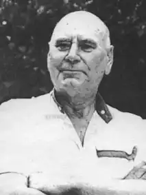

Сизоненко Олександр Олександрович народився 20 вересня 1923 року в селі Новоолександрівка Баштанського району в селянській родині. Учасник Другої світової війни. Після війни працював робітником на Чорноморському суднобудівному заводі в Миколаєві, в редакції "Блокнота агітатора". Без відриву від виробництва здобув вищу освіту, закінчивши в 1955 році літературний факультет Миколаївського педагогічного інституту.
Друкуватися почав з 1949 року – журнал "Вітчизна" надрукував оповідання "Весна", а в 1951 році вийшла перша збірка оповідань "Рідні вогні". 1962 року переїхав до Києва. Працював у сценарному відділі Київської кіностудії ім. О.Довженка, пізніше був на творчій роботі.
Автор збірок оповідань "Рідні вогні"(1951), "Рідні краї" (1955), "Далекі гудки" (1957), "В батьківському краю" (1959); нарису "Де народжуються кораблі" (1959); книжок повістей та оповідань "Для чого живеш на світі" (1961), "Жду тебя на островах"(1963), "На Веселому Роздолі" (1956), "Зорі падають в серпні"(1957), "Пауль, Петер, Йоганн…" (1967) "Підняті обрії"(1971), "Хліб з рідного поля" (1978), "Сьомий пагорб" (1981); романів "Корабели"(1960), "Білі хмари" (1965), "Хто твій друг"(1972). У 1983 році вийшли "Вибрані твори" в 2-х томах, "Мить і вічність" (1986), "Далекий Бейкуш" (1990), "Не вбиваймо своїх пророків. Книга талантів" (2003). Більшість творів перекладено російською мовою. Твором, що приніс громадсько – літературне визнання, став роман "Корабели", в якому показано життя великого суднобудівного заводу. Краще за будь-кого про автора розказують його твори. Тим більше, що скупий на похвалу талановитий український літератор Павло Загребельний 20 вересня 1973 року, коли О. Сизоненку виповнилося 50 років, по українському радіо заявив: "Проза Сизоненка має особливу тональність, Сизоненко не любить багато вигадувати, любить писати з натури. Усі його герої – це майже не вигадані люди. Залюбленість у рідні місця, рідних людей створює особливий стиль, сповідницький характер його розповідей. Сизоненко стоїть на шляху до великого таємничого процесу, коли художній твір зливається з дійсністю". Сторінки більш як 40 книжок свідчать про справедливість цих слів. У них і мелодії степового безмежжя рідної Новоалександрівки, і героїзм фронтовиків, і самовіддана праця корабелів – чорноморців – не випадкові сюжети, а епізоди з життя письменника О. Сизоненка. За епічну трилогію "Степ", "Була осінь", "Мета" О. Сизоненко у 1984 року був удостоєний Державної премії Української РСР ім. Т. Шевченка. За цикл новел "А земля перебува вовіки…" став лауреатом ім. Ю.І. Яновського. Член Національної Спілки письменників України (1952). Помер 13 вересня 2018 року. Похований письменник на Байковому кладовищі.